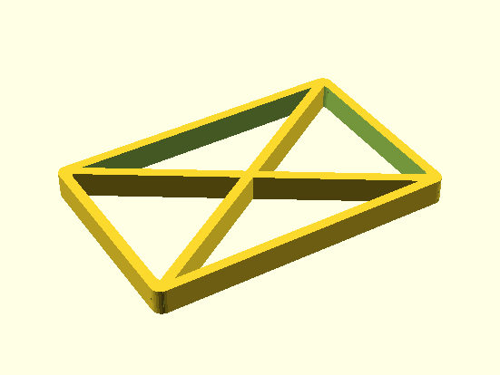
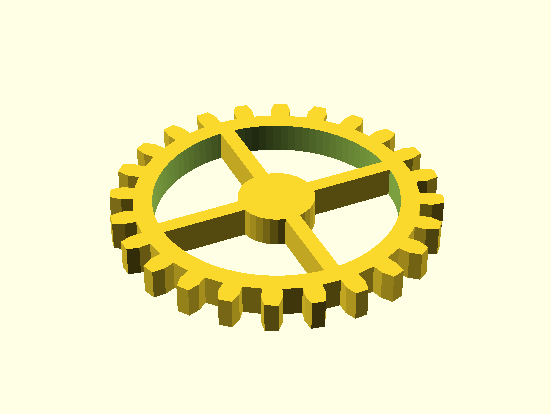
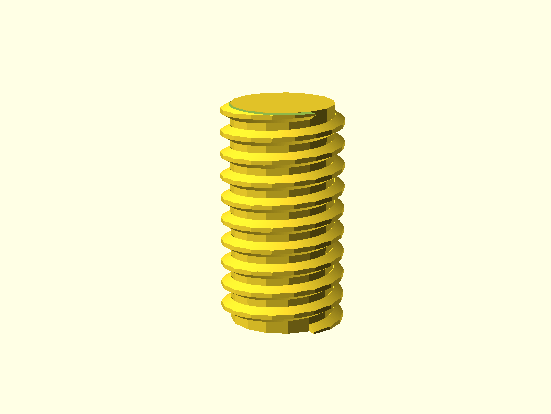
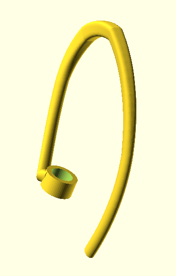

I've done a lot of 3D design work in my career so far. I've come to prefer procedural CAD and have written lots of code snippets that I can reuse from project ot project. I've published a library of OpenSCAD scripts that I wrote to generate a variety of highly reusable shapes and structures. This page briefly describes a few of them.

I often CAD with 3D printing in mind. I'm very conscious about minimizing wasted material and minimizing the time it takes for a design to print. For many applications, solids shapes contain lots of "low-value" volume; by this I mean volume that doesn't contribute significantly to the structural integrity of the object. 3D printers already factor this in when they print a lattice as the "infill" for a shape rather than filling the shape solidly with material. In doing so, 3D printers help reduce the material needed for a print from something that scales as \(r^{3}\) (where \(r\) is the width of the print) to something that scales with \(r^{2}\).
However, a design can still have unnecessary surface area. To help this, I designed an OpenSCAD class for cube which replaces a solid cube with a lattice. This improves the material scaling from something that scales as \(r^{2}\) to something that scales as \(r\). This can reduce the print time by more than 50% for large prints.
OpenSCAD makes it straightforward to translate a lattice of points in 3D space (and information about which are joined by faces) in order to produce a solid. I used this to develop several complex but commonly used shapes that I've used across several mechanical projects.




I designed a pan-tilt base for a webcam using only 3D printed mechanical parts. The base housed two NEMA 17 stepper motors which were connected to a Raspberry Pi. I printed an assembled the base and positioned it near some house plants right before I left for a few weeks of traveling. By sshing into the Raspberry Pi I could steer the camera and inspect the inside of my apartment and check the progress of my fully automated watering system and the status of my house plants.